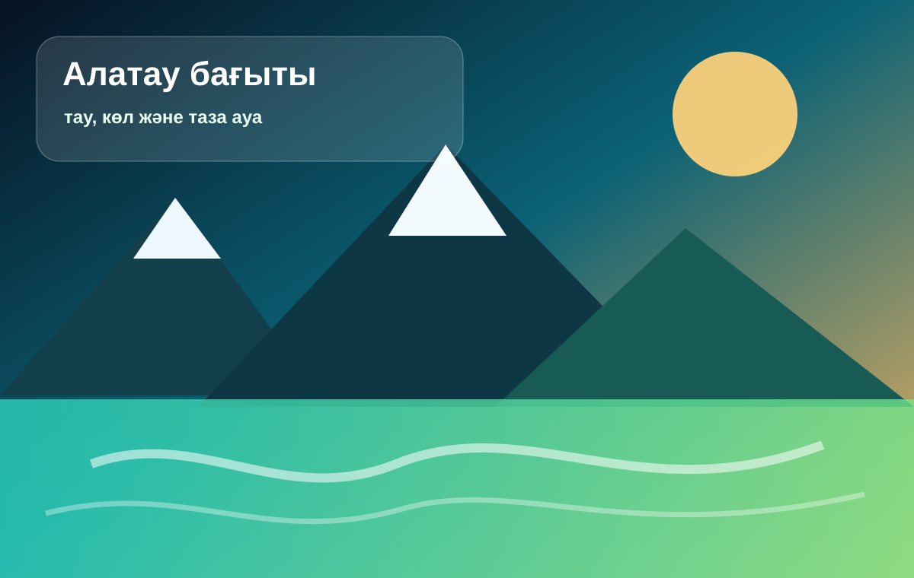
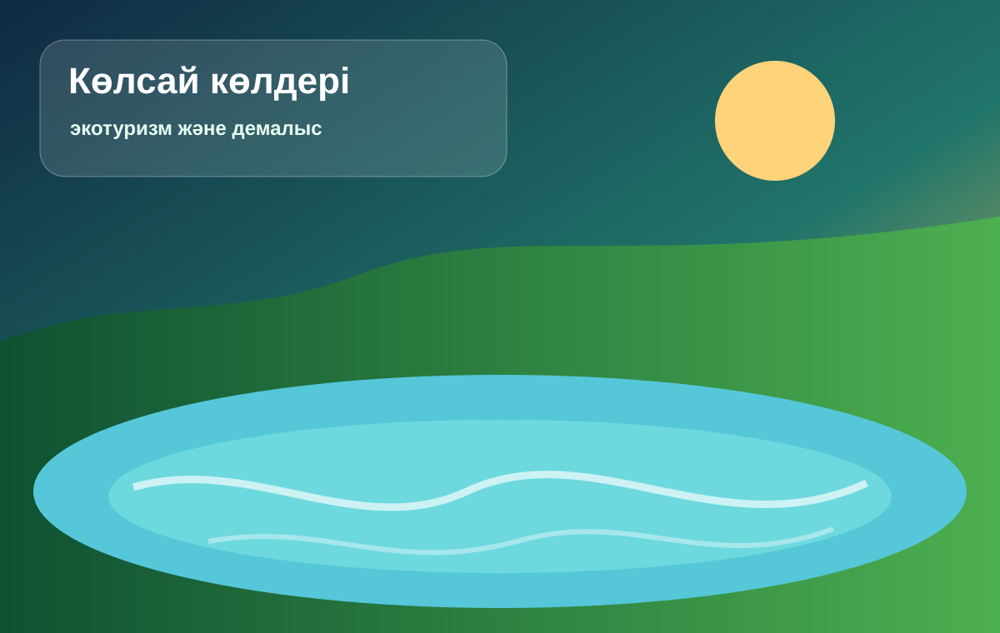
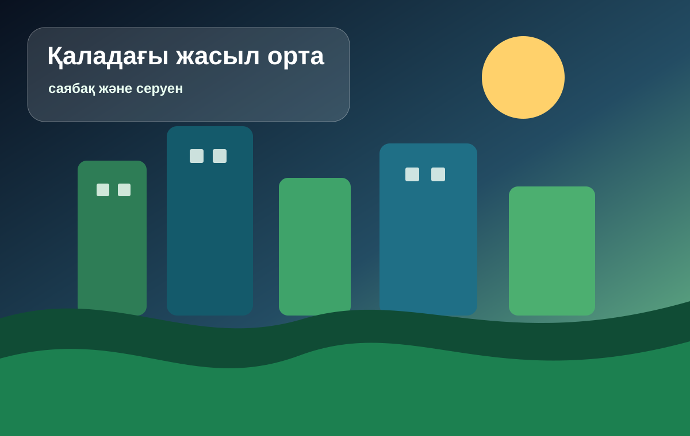

Алатау бағыты
Тау көрінісі, таза ауа және табиғи ландшафт.
Бұл бетте кемінде үш сурет, бір аудиофайл және бір бейнефайл орналасқан.
Суреттер сайт тақырыбына сай жасалған және әрқайсысы табиғат пен демалыс идеясын көрсетеді.

Тау көрінісі, таза ауа және табиғи ландшафт.

Көл жағасындағы тыныш демалыс пен экотуризм.

Қаланың ішінде табиғатпен үйлесімді демалу орны.
Медиа файлдар сайт ішінде орналасқан, сондықтан интернеттен бөлек материал іздеудің қажеті жоқ.
Қысқа дыбыстық файл сайт талабын орындау үшін қосылды.
Бейне табиғат тақырыбын визуалды түрде толықтырады.
Табиғатты қорғау әр саяхатшының жауапкершілігінен басталады.